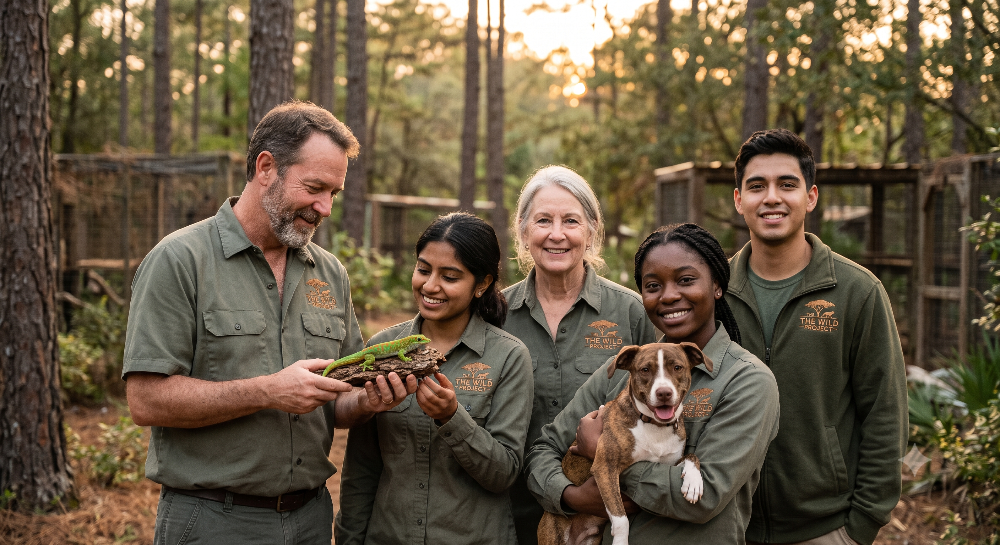

¿Quiénes Somos?
The Wild Project nació de una convicción profunda: todos los animales domésticos sin importar si caminan con cuatro patas, si tienen plumas o si habitan en un terrario merecen vivir con dignidad, respeto y los cuidados adecuados. Nos especializamos en rescatar, rehabilitar y reubicar de forma responsable a perros, gatos y especies exóticas que por diversas razones perdieron su hogar.

Nuestra Visión y Valores
- Rescate sin excepciones: Atendemos tanto a los clásicos compañeros de casa (perros y gatos) como a reptiles, aves y pequeños mamíferos exóticos que a menudo sufren por la falta de información especializada.
- Educación antes de entregar: Creemos firmemente que una adopción exitosa se basa en la educación. Por eso capacitamos a cada adoptante sobre el hábitat, la dieta y las necesidades médicas específicas de su nuevo compañero.
- Bienestar y Ética: Trabajamos bajo estrictos estándares de bienestar animal, asegurando que cada transición a un nuevo hogar sea segura tanto para la familia como para el animal.